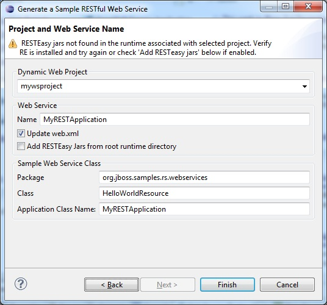
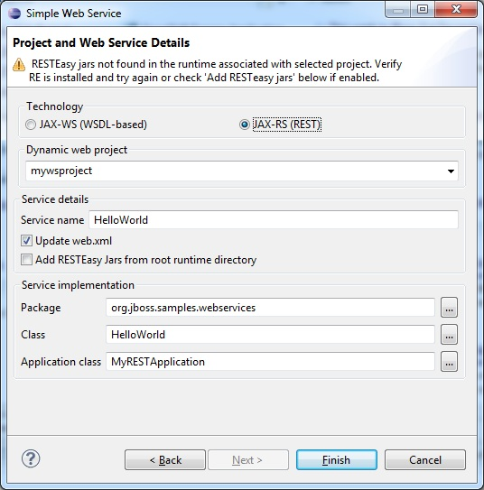
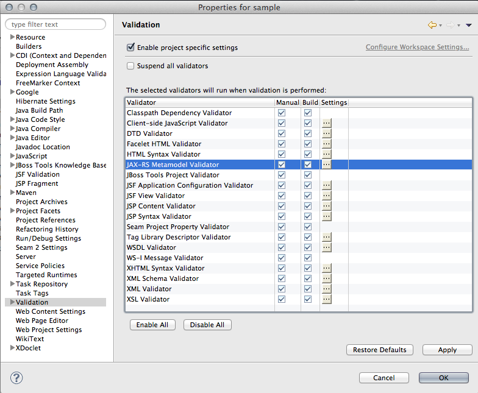

| Web Service Wizard Updates |
With some AS versions no longer requiring web.xml files and RESTEasy jars for JAX-RS support being deployed differently between AS5/6 and AS7, a few changes needed to be made to the Web Service wizards provided with JBoss Tools.

In this release, a few things have changed:
- In the "Generate a Sample RESTful Web Service" wizard, you can finish the wizard even if the RESTEasy jars are not found in the project classpath or runtime associated with the project.
- You also now get the option to add RESTEasy jars to the project if they are not already installed in the runtime, but appear in a directory in the root runtime directory. This is not required, but can help when dealing with AS5-based web service projects.
These changes were also made in the ""Simple Web Service" wizard when JAX-RS is selected.

Related Jira
|
| JAX-RS Tooling Updates |
A refactoring of the core plugin now brings support for changes in the working copies, which means that you can see the URI Path Templates, consumed and produced mediatypes being updated in the 'JAX-RS REST Web Services' node of the 'Project Explorer' view just as you code, not only when you save a .java file.
Related Jira
Furthermore, the JAX-RS validation phase is now plugged into the Eclipse WTP Validation mecanism. This gives you the possibility of disabling if you don't need it.

Related Jira
|